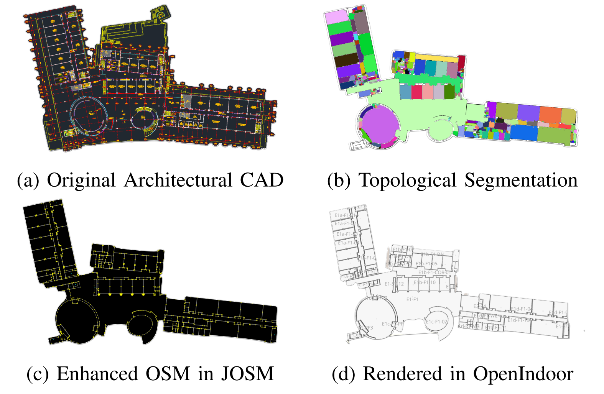

Shenrui Wu
|
| Email |
Google Scholar |
| Github |
LinkedIn |
|
I am currently a visiting student at the BAIR Lab at UC Berkeley, advised by Haozhi Qi. Simultaneously, I am an undergraduate student at ShanghaiTech University, where I'm affiliated with the SEA Lab, advised by Jiayuan Gu.
My research interests lie in the intersection of computer vision and robot learning, specifically imitation learning policies and VLA models for robot manipulation.
I'm seeking research opportunities for Summer 2026. If my background aligns with your research interests, feel free to reach out!
Email: wushr.lance [AT] berkeley.edu / wushr.Lance [AT] gmail.com
|
- [04/2026] R3D is released!
|
|
R3D: Revisiting 3D Policy Learning
Zhengdong Hong*, Shenrui Wu*, Haozhe Cui*, Boyi Zhao, Ran Ji, Yiyang He, Hangxing Zhang, Zundong Ke, Jun Wang, Guofeng Zhang, Jiayuan Gu†
2026
webpage |
pdf |
abstract |
bibtex |
arXiv |
code |
video
3D policy learning promises superior generalization and cross-embodiment transfer, but progress has been hindered by training instabilities and severe overfitting, precluding the adoption of powerful 3D perception models. In this work, we systematically diagnose these failures, identifying the omission of 3D data augmentation and the adverse effects of Batch Normalization as primary causes. We propose a new architecture coupling a scalable transformer-based 3D encoder with a diffusion decoder, engineered specifically for stability at scale and designed to leverage large-scale pre-training. Our approach significantly outperforms state-of-the-art 3D baselines on challenging manipulation benchmarks, establishing a new and robust foundation for scalable 3D imitation learning.
@article{
}
|
|

|
Generation of Indoor Open Street Maps for Robot Navigation from CAD Files
Jiajie Zhang, Shenrui Wu, Xu Ma, Sören Schwertfeger
2025
pdf |
abstract |
bibtex |
arXiv |
code |
video
The deployment of autonomous mobile robots is predicated on the availability of environmental maps, yet conventional generation via SLAM (Simultaneous Localization and Mapping) suffers from significant limitations in time, labor, and robustness, particularly in dynamic, large-scale indoor environments where map obsolescence can lead to critical localization failures. To address these challenges, this paper presents a complete and automated system for converting architectural Computer-Aided Design (CAD) files into a hierarchical topometric OpenStreetMap (OSM) representation, tailored for robust life-long robot navigation. Our core methodology involves a multi-stage pipeline that first isolates key structural layers from the raw CAD data and then employs an AreaGraph-based topological segmentation to partition the building layout into a hierarchical graph of navigable spaces. This process yields a comprehensive and semantically rich map, further enhanced by automatically associating textual labels from the CAD source and cohesively merging multiple building floors into a unified, topologically-correct model. By leveraging the permanent structural information inherent in CAD files, our system circumvents the inefficiencies and fragility of SLAM, offering a practical and scalable solution for deploying robots in complex indoor spaces. The software is encapsulated within an intuitive Graphical User Interface (GUI) to facilitate practical use.
@article{zhang2025generation,
title={Generation of indoor open street maps for robot navigation from cad files},
author={Zhang, Jiajie and Wu, Shenrui and Ma, Xu and Schwertfeger, S{\"o}ren},
journal={arXiv preprint arXiv:2507.00552},
year={2025}
}
|
Website template from here
|
|
{kind=link}